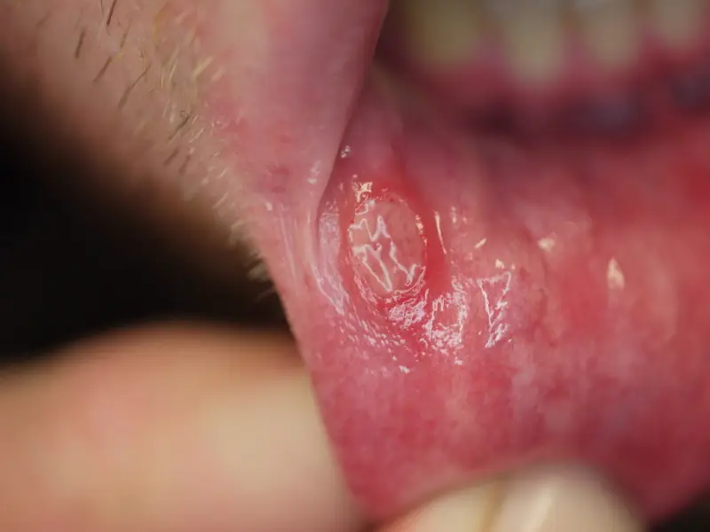

DX.4 — Stomatite aphteuse récidivante
L'aphtose récidivante reste bénigne, mais trois erreurs coûtent cherS1S3S8. Le débutant nomme « aphte » un carcinome qui ne guérit pas, méconnaît une maladie de Behçet ou digestive, ou applique dans la bouche un produit cutanéS1S3S16. Le diagnostic reste clinique : il repose sur l'histoire des poussées, l'aspect de l'ulcère et l'absence de tout signe systémiqueS1.
1. Définition
En 2010, l'équipe maxillo-faciale du Centre hospitalier universitaire vaudois (CHUV) a publié dans la Revue Médicale Suisse la définition retenue iciS1. La stomatite aphteuse récidivante (SAR) y est la maladie ulcéreuse la plus fréquente de la muqueuse buccaleS1. Sa lésion élémentaire est l'aphte vulgaire, un ulcère douloureux, peu profond, rond ou ovoïde, bordé d'un halo inflammatoire rougeS1. Les Hôpitaux universitaires de Genève (HUG) précisent que la SAR désigne un aphte vulgaire récidivant, sans maladie systémique, dont les poussées commencent avant l'âge adulteS2.
L'aphte vulgaire, lésion élémentaire de la SAR
Le fond de l'aphte est jaunâtre à grisâtre et pseudomembraneux ; ces caractères appartiennent à la phase d'étatS1. La cicatrisation modifie ensuite la lésion, qui perd sa régularité et ses limites nettes en huit à quinze joursS1. L'histologie ne distingue pas l'aphte isolé de la lésion de la SAR : seul le caractère récidivant permet donc le diagnosticS1.
2. Épidémiologie (Suisse, puis Europe)
La revue suisse estime que la SAR touche au moins 10 % de la population, et jusqu'à 25 % dans les milieux socio-économiques favorisésS1. Aucune cohorte suisse n'a mesuré cette fréquence ; deux enquêtes européennes donnent des chiffres plus bas, car elles comptent des mesures différentesS4S5. Le tableau des fréquences, le terrain et l'histoire naturelle expliquent pourquoi la plupart des patients n'ont besoin que d'un traitement local.
Fréquence de l'aphtose : Suisse, puis Europe
Le tableau rassemble les chiffres lus ; il sépare les estimations de revue, les antécédents rapportés et la prévalence instantanée, qui ne se comparent pas entre euxS1S4S5.
| Donnée | Valeur | Population, mesure et année | Source |
|---|---|---|---|
| SAR dans la population générale | Au moins 10 %, jusqu'à 25 % en milieu favorisé | Estimation de revue, Revue Médicale Suisse, 2010 | S1 |
| Étudiants en période d'examens | Jusqu'à 60 % | Même revue, 2010 | S1 |
| Incidence chez l'enfant et l'adolescent | 1,5 %, contre 0,85 % chez l'adulte | Études populationnelles citées par la même revue | S1 |
| Antécédent d'aphtes récidivants | 9,7 % | 555 adultes de 25 à 75 ans examinés à Ljubljana, antécédents rapportés, publication 2000 | S4 |
| Aphtes récidivants présents à l'examen | 1,9 % | 308 adultes de plus de 30 ans à Oviedo, prévalence instantanée, publication 2002 | S5 |
| Histoire familiale d'aphtes | Un tiers des patients | Revue Médicale Suisse, 2010 | S1 |
L'écart entre 9,7 % et 1,9 % s'explique ainsi : la première étude compte les antécédents de toute une vie, la seconde ne voit que les aphtes présents le jour de l'examenS4S5.
Qui fait des aphtes ?
Le portrait type du patient adulte est une femme blanche de moins de 40 ans, non fumeuse, issue d'un milieu favoriséS1. Le stress augmente la fréquence, ce qui explique les poussées des étudiants en période d'examensS1. Le début avant cinq ans semble aggraver le pronostic de la maladieS1. L'arrêt du tabac est le facteur comportemental le plus directement lié à une SAR tardive ou à son exacerbation brutaleS1.
Histoire naturelle de la SAR
Les premières poussées surviennent dans l'enfance ou l'adolescence, puis leur sévérité et leur fréquence diminuent avec l'âgeS1. Les HUG situent la rémission spontanée vers la troisième décennie, mais elle peut prendre des années, ce qui justifie de traiterS1S2. Chez certains patients, les crises se rapprochent jusqu'à se succéder sans intervalle libre, et la maladie devient alors invalidanteS1.
3. Physiopathologie
La topographie de l'aphte découle de la structure de la muqueuse : la base anatomique distingue la muqueuse mobile non kératinisée, où siègent les aphtes, de la muqueuse kératinisée qu'ils épargnentS1. La chaîne immunitaire reste incomplètement connue, mais elle explique pourquoi les corticoïdes soulagent sans guérirS1. Le tableau de corrélation relie chaque perturbation à son exploration et à son traitement.
Base à connaître : deux muqueuses dans la même bouche
La bouche porte deux revêtementsS1. La muqueuse mobile non kératinisée est celle des joues, des lèvres, du plancher et des faces ventrale et latérales de la langueS1. La muqueuse kératinisée est fixée sur le palais dur, la gencive attachée et le dos de la langueS1. Les aphtes de la forme mineure siègent presque exclusivement sur la muqueuse mobile, alors que la muqueuse kératinisée n'est que très rarement atteinteS1. Cette règle topographique sert donc de premier tri : un ulcère de la gencive attachée ou du palais dur doit faire chercher une autre causeS1.
Muqueuse mobile et muqueuse kératinisée de la bouche. Ce schéma anatomique publié en couleur montre une bouche saine grande ouverte, vue de face.

Lisez d'abord seul ce cliché (muqueuse mobile et muqueuse kératinisée de la bouche) : cherchez vous-même le signe.
La copie annotée (muqueuse mobile et muqueuse kératinisée de la bouche) numérote les repères qui sont décrits ci-dessous.
- 1. Le palais dur porte une muqueuse kératinisée ; l’aphte mineur l’épargne presque toujours, alors que l’aphte géant peut l’atteindre.S1
- 2. Les piliers amygdaliens font partie de la muqueuse mobile non kératinisée, où siègent habituellement les aphtes.S1
- 3. Le dos de la langue est kératinisé ; un ulcère à cet endroit oriente vers un aphte géant, une forme herpétiforme ou une autre cause.S1
- 4. Le vestibule et la face interne des lèvres forment la muqueuse mobile non kératinisée : c’est le siège typique de l’aphte mineur.S1
- Le schéma montre une bouche saine : il apprend la topographie, mais il ne remplace pas la photographie de la lésion.S1
Ce que l'image décide. Un ulcère limité à la gencive attachée ou au palais dur oblige à chercher une autre cause avant de conclure à une aphtose mineure. S1

Les formes géante et herpétiforme font exception, puisqu'elles peuvent atteindre toute la muqueuse, y compris le dos de la langue et le palaisS1.
De la prédisposition à l'ulcère, en quatre temps
- Amorce. Une prédisposition génétique est suspectée, car certains antigènes leucocytaires (HLA-A2, A11, B12, DR2) sont plus fréquents chez les patientsS1.
- Développement. Les lymphocytes T producteurs de facteur de nécrose tumorale alpha (TNF-α) sont plus nombreux, ce qui entretient une réponse immune inadéquate contre l'épithéliumS1.
- Installation. Une réaction croisée entre des protéines de choc thermique streptococciques et la muqueuse buccale est décrite, sans faire de la SAR une maladie infectieuse ni transmissibleS1.
- Maintien. Des cofacteurs non immunitaires entretiennent les poussées : carences en fer, folates, vitamine B ou zinc, traumatismes, intolérances alimentaires, arrêt du tabac et certains médicamentsS1.
Les traitements qui freinent le TNF-α, comme la thalidomide, contrôlent la maladie, ce qui soutient le rôle central de cette cytokineS1. La compensation d'une carence n'a cependant pas montré d'efficacité constante, car la carence agit comme cofacteur et non comme cause uniqueS1.
Corrélation : perturbation, exploration, traitement
Chaque ligne relie un mécanisme à ce qui le montre et à ce qui le corrige ; aucune n'a de test spécifique, si bien que la clinique reste l'examen de référenceS1S2.
| Perturbation | Exploration | Traitement (mécanisme) |
|---|---|---|
| Inflammation locale médiée par les lymphocytes T | Aspect clinique de l'ulcère | Corticoïde topique, qui réduit l'inflammation et la douleur sans prévenir la récidive |
| Carence en fer, folates ou vitamine B12 | Formule sanguine, bilan ferrique, folates, vitamine B12, si le tableau l'impose | Correction de la carence démontrée |
| Maladie systémique (Behçet, maladie de Crohn, maladie cœliaque) | Anamnèse des autres muqueuses et du tube digestif, biopsie si lésion non buccale | Traitement de la maladie causale |
| Excès de TNF-α dans les formes sévères | Fréquence et taille des poussées | Immunomodulateur systémique, prescrit par le spécialiste |
| Agression locale (dent tranchante, prothèse, dentifrice au laurylsulfate de sodium) | Examen dentaire et prothétique | Suppression de la cause |
4. Démarche diagnostique
La démarche commence par les diagnostics graves : un ulcère unique qui persiste plus de trois semaines doit faire évoquer un carcinome, quelle que soit son étiquette initialeS8. Elle cherche ensuite une cause systémique, car des lésions aphtoïdes très semblables accompagnent plusieurs maladies généralesS1. Le raisonnement pas à pas montre l'erreur classique du débutant et la façon de l'éviter.
Diagnostics à confronter, les graves d'abord
| Diagnostic | Élément qui tranche | Piège | Conduite si positif |
|---|---|---|---|
| 🚩 Carcinome épidermoïde | Ulcère inexpliqué depuis plus de trois semaines, bords irréguliers, couleur hétérogène, saignement au contact | Le nommer « aphte » parce qu'il fait mal | Adresser pour biopsie, sans essai thérapeutique prolongé |
| Maladie de Behçet | Aphtes génitaux, atteinte oculaire, lésions cutanées | Ne pas interroger sur les autres muqueuses | Score ICBD, avis spécialisé |
| Maladie de Crohn, colite ulcéreuse | Diarrhée persistante | Prendre les aphtes pour une aphtose isolée | Bilan digestif |
| Maladie cœliaque | Perte de poids, signes de malabsorption | Négliger l'amaigrissement | Recherche d'une intolérance au gluten |
| Ulcère médicamenteux | Début après un anti-inflammatoire, un bêtabloquant, le nicorandil ou l'alendronate | Omettre la liste des médicaments | Arrêt ou substitution du médicament |
| Syphilis primaire | Chancre induré et indolore, adénopathie | Croire à la guérison quand le chancre disparaît | Dépistage et traitement de l'infection |
| Gingivostomatite herpétique | Fièvre, gingivite diffuse, vésicules | Confondre « herpétiforme » et herpès | Voir DX.6 |
La revue suisse fournit les causes systémiques et médicamenteuses du tableauS1. Les diapositives du CHUV fournissent la syphilis et les signes tumoraux, et le NICE fixe le délai de trois semainesS3S8.
Raisonnement pas à pas, avec un exemple chiffré
- Mécanisme. L'aphte guérit seul en sept à dix jours dans la forme mineure ; un ulcère qui dure plus longtemps n'obéit donc plus à ce mécanismeS1.
- Signe. Un fumeur de 62 ans présente depuis cinq semaines un « aphte » du bord de langue aux bords irréguliers, qui saigne au contactS3. Le début tardif et la durée excluent la SARS1.
- Examen. La durée dépasse le seuil de trois semaines, si bien que le NICE recommande d'envisager une filière de suspicion de cancerS8.
- Décision. Le patient est adressé pour biopsie ; un corticoïde topique prescrit « pour voir » ferait perdre plusieurs semainesS3S8.
L'erreur classique consiste à appeler « aphte » toute plaie buccale ; on l'évite en vérifiant que l'histoire comporte des poussées qui guérissent complètement entre ellesS1S2.
5. Anamnèse ciblée et drapeaux rouges
L'anamnèse établit d'abord le profil des poussées, puis elle caractérise la douleur et recherche les facteurs déclenchantsS1. Elle interroge ensuite sur les autres muqueuses et organes, car leur atteinte fait sortir du cadre de la SAR isoléeS1. Les drapeaux rouges imposent chacun une action précise.
Caractériser les poussées
L'âge de la première poussée oriente le plus : une SAR commence dans l'enfance ou l'adolescence, alors qu'une survenue tardive fait suspecter une maladie sous-jacente ou un médicamentS1. Le nombre d'ulcères, leur taille, la durée de chaque crise et l'intervalle libre définissent la forme cliniqueS1. Une guérison complète entre deux poussées est typique, car elle distingue la récidive d'un ulcère unique qui persisteS1S2. Une histoire familiale d'aphtes conforte le diagnostic, puisqu'elle se retrouve chez un tiers des patientsS1.
Caractériser la douleur
Le patient perçoit souvent des prodromes, piqûres ou brûlures, à l'endroit où l'aphte apparaîtra quelques heures plus tardS1. La douleur est vive et peut gêner l'élocution, l'alimentation et la déglutition ; elle est donc typique de l'aphteS1. Une douleur évaluée à 8 sur 10 s'observe dans les formes géantes, comme dans le cas familial décrit par la revue suisseS1. Une douleur ne rassure jamais : une érosion indolore ou une zone hypoesthésique sont au contraire des signes d'alerte tumorauxS3.
Rechercher les facteurs déclenchants
Le stress, les traumatismes buccaux et les intolérances alimentaires précèdent souvent les poussées ; noix, agrumes ou chocolat sont cités par les HUGS1S2. Un dentifrice ou un antiseptique au laurylsulfate de sodium peut entretenir la maladie, ce qui justifie d'en demander la marqueS1. Des crises qui suivent le cycle menstruel orientent vers une composante hormonale, sensible à une contraception progestativeS1. L'arrêt récent du tabac est à rechercher, car il déclenche des SAR tardives ou des exacerbations brutalesS1.
Interroger les autres muqueuses et les organes
Des ulcères génitaux font rechercher une maladie de Behçet, même si celle-ci est rarement découverte à partir des seuls aphtesS1. Une diarrhée persistante oriente vers une maladie de Crohn ou une colite ulcéreuse, et une perte de poids vers une maladie cœliaqueS1. La liste des médicaments recherche un anti-inflammatoire, un bêtabloquant, le nicorandil ou l'alendronate, associés à des lésions aphtoïdesS1. Chez l'enfant, des épisodes fébriles réguliers de trois à sept jours avec aphtes, pharyngite et adénite cervicale évoquent un syndrome PFAPAS7.
Drapeaux rouges : ce qui n'est pas une SAR simple
| Drapeau rouge | Signification | Action immédiate |
|---|---|---|
| Ulcère unique inexpliqué depuis plus de trois semaines | Carcinome possible | Adresser en filière de suspicion de cancer |
| Bords irréguliers, saignement au contact, hypoesthésie, adénopathie cervicale | Lésion tumorale | Biopsie par le spécialiste |
| Ulcères génitaux ou atteinte oculaire | Maladie de Behçet | Avis spécialisé, score ICBD |
| Diarrhée, amaigrissement | Maladie digestive | Bilan digestif ciblé |
| Début après l'adolescence | Cause secondaire ou médicamenteuse | Élargir le bilan |
| Alcool, tabac, immunosuppression, fatigue | Terrain tumoral ou infectieux | Abaisser le seuil de biopsie |
Ces drapeaux proviennent du NICE pour le délai, des diapositives du CHUV pour les signes tumoraux et de la revue suisse pour les causes systémiquesS1S3S8.
6. Examen physique ciblé, région par région
L'examen se fait sous un bon éclairage, prothèses retirées, en suivant toujours le même ordre pour ne manquer aucune zone. Il commence par l'état général, puis il inspecte les lèvres et le vestibule, les joues et la langueS1. Il poursuit par le plancher, le palais et l'oropharynx, puis les gencives et les dentsS1. Il se termine par la palpation de l'ulcère, les aires ganglionnaires et les autres muqueusesS3.
Région 1 — L'état général et l'hydratation
Le premier geste observe si le patient boit et mange, car une douleur intense peut limiter l'alimentation et la déglutitionS1. La fièvre, l'amaigrissement ou la fatigue ne font pas partie de la SAR et orientent vers une cause systémique ou tumoraleS1S3.
Région 2 — Les lèvres et le vestibule
Le geste éverse chaque lèvre entre le pouce et l'index, puis il expose le vestibule en écartant la joue avec un abaisse-langue. La face interne des lèvres est un siège typique de l'aphte mineur, car elle appartient à la muqueuse mobile non kératiniséeS1.
Aphte de la face interne de la lèvre inférieure. Cette photographie clinique en couleur montre la lèvre inférieure éversée sous une lumière directe.

Lisez d'abord seul ce cliché (aphte de la face interne de la lèvre inférieure) : cherchez vous-même le signe.
La copie annotée (aphte de la face interne de la lèvre inférieure) numérote les repères qui sont décrits ci-dessous.
- 1. Le fond de l’ulcère est jaunâtre et pseudomembraneux, car la fibrine recouvre la perte de substance.S1
- 2. Le halo rouge entoure l’ulcère et traduit l’inflammation de la muqueuse voisine.S1
- 3. Le bord reste net et régulier, ce qui distingue l’aphte en phase d’état d’une lésion bourgeonnante.S1
- 4. La muqueuse labiale qui porte la lésion est mobile et non kératinisée, conformément à la topographie de l’aphte.S1
Ce que l'image décide. Un ulcère rond, à fond jaune et halo rouge sur muqueuse mobile, guérissant entre les poussées, suffit au diagnostic sans examen complémentaire. S1

Région 3 — La muqueuse des joues
L'inspection parcourt toute la face interne des joues, qui fait partie des sièges habituels de l'aphteS1. Un ulcère placé en regard d'une dent cassée ou d'une prothèse fait d'abord envisager une ulcération traumatiqueS3.
Région 4 — La langue
Le patient tire la langue, puis l'examinateur la saisit dans une compresse pour voir les faces latérales et la face ventrale. Les faces ventrale et latérales sont des sièges d'aphte mineur, alors qu'une atteinte du dos kératinisé suggère une forme géante ou herpétiformeS1. Le bord de langue peut aussi porter un carcinome, comme le rappelle un cas clinique du CHUV, ce qui impose d'y palper tout ulcère persistantS3.
Région 6 — Le palais et l'oropharynx
L'abaisse-langue expose le palais dur, le voile, la luette et les piliers amygdaliens, qui appartiennent à la muqueuse mobileS1. Un ulcère du palais dur kératinisé n'a pas la topographie de l'aphte mineur et fait chercher un aphte géant ou une autre causeS1.
Région 7 — Les gencives, les dents et les prothèses
Une gingivite diffuse et vésiculeuse, absente dans la SAR, oriente vers une primo-infection herpétiqueS3. Les dents tranchantes, les obturations mal polies et les prothèses mal adaptées sont recherchées, car elles entretiennent les pousséesS1S3.
Région 8 — La palpation de l'ulcère
Le doigt ganté palpe la base de l'ulcère entre deux doigts et provoque, le cas échéant, un saignement au contact, qui est un signe tumoralS3. Des bords irréguliers et une couleur hétérogène sont d'autres signes tumoraux à noterS3. La taille se mesure en millimètres, car elle sépare l'aphte mineur de l'aphte géant, qui dépasse un centimètreS1.
Région 9 — Les aires ganglionnaires cervicales
Les deux mains palpent les aires sous-mentale, sous-mandibulaires et jugulo-carotidiennes, car une adénopathie cervicale est un drapeau rougeS3. Une masse cervicale persistante et inexpliquée justifie à elle seule une filière de suspicion de cancer, selon le NICES8.
Région 10 — La peau, les yeux et les organes génitaux
Cet examen se fait lorsque l'anamnèse oriente, car une lésion en dehors de la bouche interdit de retenir une SAR isoléeS1. Une atteinte génitale, oculaire ou cutanée compte dans le score international de la maladie de BehçetS6. Une lésion d'une autre muqueuse justifie alors une biopsie d'ulcère pour le diagnostic différentielS1.
7. Approche syndromique
Trois syndromes structurent la lecture du tableauS1. Le syndrome ulcéreux définit la forme, le syndrome douloureux mesure le retentissement, et le syndrome systémique d'alerte fait sortir de la SARS1.
7.1 Syndrome ulcéreux buccal récidivant
Ce syndrome associe des ulcères arrondis à fond jaunâtre, une évolution par poussées et une guérison spontanée ; ses trois formes diffèrent par la taille, la durée et la cicatriceS1.
7.1 — Les trois formes de la SAR
| Forme | Ulcères | Siège | Guérison |
|---|---|---|---|
| Mineure (Mikulicz) | Environ 2 mm, un à six par poussée, entre 10 et 40 ans | Muqueuse mobile non kératinisée presque exclusivement | En sept à dix jours, sans trace ; récidive tous les un à quatre mois |
| Géante (majeure) | Plus d'un centimètre, un à six par crise | Toute la muqueuse, y compris palais et dos de langue | Lente, en 10 à 40 jours, avec cicatrices parfois rétractiles |
| Herpétiforme | Vésicules puis petites ulcérations qui confluent en grands ulcères irréguliers | Toute la muqueuse, y compris kératinisée | En dix à quinze jours, mais récidive à court terme |
La revue suisse décrit ces formes en 2010S1. Les HUG estiment la forme mineure à 80 % des cas, la forme majeure à 10 % et la forme herpétiforme à 5 à 10 %S2. La forme herpétiforme touche surtout les femmes d'un groupe d'âge plus élevé, et la PCR (amplification génique) écarte l'herpès simplexS1.
7.2 Syndrome douloureux et fonctionnel
La douleur, la gêne à parler, à manger et à avaler forment le retentissement ; une échelle numérique en mesure l'intensité et guide l'escalade thérapeutiqueS1.
7.2 — Les signes du syndrome douloureux
Le signe fonctionnel principal est la douleur au contact des aliments, que l'échelle visuelle analogique (EVA) chiffre de 0 à 10S1. Le signe physique associé est l'ulcère sensible au toucher, dont la taille et le nombre expliquent l'intensitéS1. Dans la forme géante, une bride cicatricielle peut limiter l'ouverture buccale, mesurée à 27 mm chez un jeune homme atteint depuis l'âge de six ansS1.
7.3 Syndrome systémique d'alerte
Ce syndrome réunit les signes extrabuccaux qui transforment une aphtose en aphtose secondaire : lésions génitales, oculaires, cutanées, digestives ou fièvre périodiqueS1S7.
7.3 — Les signes de l'aphtose secondaire
Les signes fonctionnels sont la diarrhée, l'amaigrissement, la douleur oculaire et les ulcères génitaux, que le patient ne signale pas spontanémentS1. Les signes physiques sont une atteinte d'une autre muqueuse, des lésions cutanées et des adénopathies cervicales au cours d'accès fébrilesS6S7. Leur mécanisme est celui de la maladie causale, si bien que le traitement de celle-ci contrôle souvent les ulcères buccauxS1.
8. Diagnostic positif et critères
Il n'existe aucun test spécifique : la revue suisse fonde le diagnostic sur une histoire d'ulcères récidivants apparus dans l'enfance et sur des ulcères typiques à l'examenS1. Les critères pratiques disent ce qui suffit, et le score international de Behçet dit quand une aphtose cesse d'être isoléeS1S6.
Critères pratiques de la SAR (Revue Médicale Suisse 2010, HUG 2011)
| Élément | Statut |
|---|---|
| Ulcères typiques : ronds, à fond jaunâtre, halo rouge, sur muqueuse mobile | Nécessaire |
| Poussées récidivantes avec guérison entre elles | Nécessaire |
| Début dans l'enfance ou l'adolescence | Nécessaire selon les HUG |
| Aucun autre symptôme ni signe systémique | Nécessaire |
| Histoire familiale d'aphtes | Confirmatoire, non nécessaire |
| Lésion d'une autre muqueuse | Exclut la SAR isolée et impose une biopsie |
Ce qui suffit est donc l'association des quatre éléments nécessaires ; ce qui ne suffit pas est un ulcère unique, même typique, sans histoire de récidiveS1S2.
Score international de la maladie de Behçet (ICBD, 2014)
Le score accorde 2 points aux lésions oculaires ; les aphtes buccaux et les aphtes génitaux en reçoivent aussi 2 chacunS6. Il attribue 1 point aux lésions cutanées, à l'atteinte du système nerveux central, aux manifestations vasculaires et au test pathergique positifS6. Un total d'au moins 4 points classe le patient comme atteint de maladie de BehçetS6. Dans la cohorte de validation, la sensibilité atteint 94,8 % et la spécificité 90,5 %S6.
Les aphtes buccaux seuls donnent donc 2 points et ne suffisent jamais : il faut au moins une autre atteinte pour atteindre le seuilS6.
9. Examens complémentaires
L'examen de référence reste clinique, et une SAR typique ne demande aucun bilan biologique selon les HUGS2. Un bilan biologique ciblé se discute quand l'histoire ou l'examen s'écartent du cadreS1S2. Les situations particulières adaptent la démarche, et la biopsie et la PCR servent en deuxième intentionS1.
9.a — Référence : le diagnostic clinique
Le diagnostic de SAR reste clinique, car l'histologie de l'aphte ne diffère pas de celle d'une lésion isoléeS1. Les HUG ne demandent aucun bilan biologique lorsque les critères de SAR sont réunis et qu'aucun argument clinique n'évoque une maladie systémiqueS2.
9.b — Première intention si le tableau s'écarte : le bilan biologique ciblé
Les HUG proposent une formule sanguine complète, la vitamine B12, l'acide folique et le bilan ferrique lorsque le bilan se justifieS2. Ils adressent au spécialiste ou élargissent le bilan en cas de début tardif, de durée supérieure à trois semaines ou de signes systémiquesS2.
| Résultat | Signification | Conduite |
|---|---|---|
| Anémie microcytaire, ferritine basse | Carence martiale, cofacteur des poussées | Corriger la carence et chercher sa cause |
| Vitamine B12 basse, comme 100 pmol/L dans le cas des HUG | Carence en cobalamine | Substituer et chercher une malabsorption |
| Folates bas | Carence d'apport ou malabsorption | Substituer, rechercher une maladie cœliaque |
| Neutropénie | Cause hématologique ou médicamenteuse des ulcères | Avis spécialisé, revue des médicaments |
| Bilan normal | SAR primaire probable | Traitement topique |
Le piège consiste à substituer une carence en espérant guérir l'aphtose : la revue suisse rappelle que la compensation n'a pas montré d'efficacité constanteS1.
9.c — Alternatives : enfant, grossesse, terrain fragile
Chez l'enfant, un syndrome PFAPA se pose sur la clinique, et un test génétique ne se discute que dans des cas particuliersS7. Pendant la grossesse, la démarche reste clinique, puisque le diagnostic de SAR ne repose sur aucun testS1. Chez l'immunodéprimé, le seuil de biopsie et d'avis spécialisé s'abaisse, puisque l'immunosuppression figure parmi les drapeaux rougesS3.
Chez l'enfant : le syndrome PFAPA
Le syndrome PFAPA associe une fièvre périodique, une stomatite aphteuse, une pharyngite et une adénite cervicale ; il est le plus fréquent des syndromes de fièvre périodique hors du bassin méditerranéenS7. Il débute habituellement avant l'âge de cinq ans, par des accès fébriles réguliers de trois à sept joursS7. Entre les accès, l'enfant va bien et grandit normalement, ce qui le distingue d'une maladie inflammatoire chroniqueS7.
Les corticoïdes oraux sont très efficaces sur l'accès, mais ils peuvent raccourcir l'intervalle entre deux accèsS7. La colchicine semble réduire la fréquence des accès, et l'amygdalectomie, souvent curative, se réserve aux formes réfractairesS7. Le syndrome guérit souvent spontanément, mais il peut persister à l'âge adulteS7.
9.d — Deuxième intention : la biopsie d'ulcère
La biopsie est indiquée lorsque les lésions atteignent une autre muqueuse que la bouche, génitale, conjonctivale ou digestiveS1. Elle s'impose aussi devant un ulcère qui ne cicatrise pas, car l'absence de cicatrisation désigne le site de biopsieS3. Elle ne confirme pas une SAR typique, puisque son histologie n'est pas spécifiqueS1.
9.d — Deuxième intention : la PCR des virus herpès simplex
La PCR des virus herpès simplex de type 1 et 2 se demande devant une forme herpétiforme, car son aspect vésiculeux évoque à tort un herpèsS1. Un résultat négatif confirme l'aphtose herpétiforme, comme chez la femme de 34 ans décrite par la revue suisseS1.
10. Arbre décisionnel
L'arbre place les situations graves en tête, puis il gradue le traitement selon la forme de la SARS1S8.
- Si un ulcère unique est inexpliqué depuis plus de trois semaines, ou s'il saigne au contact, alors le patient est adressé pour biopsieS3S8.
- Si une autre muqueuse, l'œil ou le tube digestif est atteint, alors l'aphtose est secondaire et le bilan s'oriente vers la maladie causaleS1.
- Si des aphtes génitaux ou une atteinte oculaire s'y ajoutent, alors le score ICBD est calculé et un spécialiste est sollicitéS6.
- Si la SAR débute tardivement ou change de profil, alors les médicaments et les carences sont recherchésS1S2.
- Si la SAR est typique et isolée, alors les cofacteurs sont supprimés et un traitement local est prescritS1.
- Si la forme est mineure, alors un corticoïde topique et un antalgique local suffisent le plus souventS1.
- Si la forme est géante ou très fréquente, alors un traitement systémique se discute avec le spécialisteS1.
11. Prise en charge selon les recommandations suisses
11.A But. Aucun traitement ne guérit la SAR : le but est de soulager la douleur, de raccourcir chaque poussée et d'espacer les récidivesS1. Les corticoïdes topiques diminuent la douleur et accélèrent la guérison, sans effet démontré sur la récurrenceS2.
11.B Moyens. La fenêtre d'urgence rappelle les situations qui ne supportent aucun délai. Le traitement suit ensuite quatre temps : la suppression des cofacteurs, le traitement local, le traitement systémique et les situations spécialesS1. Le volet pratique précise le suivi entre médecin et dentiste.
Urgence — conduite chronologique
La SAR elle-même ne menace pas la vie, mais trois situations imposent d'agir vite : la douleur qui empêche de boire, l'ulcère suspect et l'aphtose qui révèle une maladie généraleS1S3S8.
- Jour 0, consultation. Le médecin vérifie que le patient boit, mesure la douleur et prescrit un antalgique localS1S17.
- Jour 0, même consultation. Il palpe l'ulcère et les aires cervicales ; des bords irréguliers, un saignement au contact ou une adénopathie imposent un avis spécialisé rapideS3.
- Jour 0, anamnèse. Des ulcères génitaux ou une atteinte oculaire font adresser au spécialiste pour bilan d'une maladie de BehçetS1S6.
- Semaine 3. Tout ulcère encore inexpliqué doit entrer en filière de suspicion de cancerS8.
Le piège qui fait perdre du temps est le corticoïde topique renouvelé sans revoir la lésion ; il masque une infection et retarde la biopsieS3S10.
Premier temps : supprimer les cofacteurs
La revue suisse place ce temps avant tout médicament, car il agit sur les causes qui entretiennent les pousséesS1.
- Le médecin corrige une carence démontrée en fer ou en vitaminesS1.
- Le dentiste supprime les traumatismes : prothèse mal adaptée, dent ou obturation tranchante, brosse à dents dureS1S3.
- Le patient évite les aliments déclencheurs repérés, sans régime d'exclusion injustifiéS1.
- Il remplace le dentifrice ou l'antiseptique au laurylsulfate de sodium par un produit sans ce tensioactifS1.
- Le médecin arrête ou substitue un médicament clairement en causeS1.
- Une contraception progestative se discute lorsque les crises suivent le cycle menstruelS1.
Deuxième temps : le traitement local
La forme mineure se traite par des moyens topiques, souvent efficaces sur un petit nombre d'aphtes présents une dizaine de joursS1. Le corticoïde topique le plus prescrit est l'acétonide de triamcinolone en pâte adhésive, dont l'AIPS cite la stomatite aphteuse et les aphtes récidivantsS10. La revue suisse note toutefois des résultats inconstants, qui semblent s'épuiser avec le tempsS1.
La bétaméthasone en bain de bouche traite les zones où une pâte adhère mal, comme le pharynx ou le plancherS1. Le gel de chlorhexidine à 1 % est indiqué lors d'aphtes selon son AIPS ; il diminue la douleur et la durée sans effet sur la récurrenceS11S2. Le gel de salicylate de choline, décrit dans le DX.5, soulage les lésions douloureuses de la muqueuse buccaleS17.
Deux pièges guettent le prescripteur : la solution de chlorhexidine à 0,2 % est contre-indiquée sur les ulcérations, et une teinture corticoïde cutanée ne doit jamais toucher les muqueusesS12S16. Une revue systématique espagnole de 2023 retient aussi les pansements adhésifs barrières et le laser, qui réduisent la douleurS9.
Troisième temps : le traitement systémique, chez le spécialiste
Les formes géantes, nombreuses ou fréquentes peuvent exiger un immunomodulateur systémique, que le spécialiste prescrit et surveilleS1.
- La prednisone en cure courte écrase en quelques jours les symptômes d'une crise sévère ; un relais topique évite la corticothérapie prolongéeS1.
- La colchicine a donné des résultats démontrés à 0,5 à 2 mg par jour, hors AIPS selon la revue suisseS1. Ses troubles digestifs restent rares à 1 mg par jour, hors AIPSS1.
- L'azathioprine et la thalidomide restent des recours spécialisés ; la thalidomide impose une contraception stricte et une surveillance neurologiqueS1.
- L'aprémilast est autorisé seulement pour les ulcères buccaux persistants de la maladie de Behçet, après échec d'un traitement topiqueS15.
La colchicine n'a pas d'information professionnelle suisse dans le corpus consulté ; sa dose suit donc la revue suisse, hors AIPSS1.
Situations spéciales
| Situation | Conduite | Source |
|---|---|---|
| Enfant | Corticoïde topique aussi bref et aussi faible que possible, car la muqueuse de l'enfant absorbe davantage ; penser au syndrome PFAPA devant des accès fébriles | S10S7 |
| Grossesse | Pâte de triamcinolone seulement en cas de nécessité absolue ; aprémilast contre-indiqué | S10S15 |
| Allaitement | Corticoïdes topiques à éviter selon l'AIPS de la pâte ; aprémilast contre-indiqué | S10S15 |
| Sujet âgé | Une première poussée tardive fait chercher une cause médicamenteuse ou systémique avant de traiter | S1 |
| Immunodépression, diabète, tuberculose | Protection antimicrobienne et avis médical avant un corticoïde topique | S10 |
| Inhibiteur puissant du CYP3A4 (ritonavir, cobicistat) | Risque d'effets systémiques de la triamcinolone, jusqu'au syndrome de Cushing | S10 |
Volet pratique : médecin, dentiste et patient
Le dentiste supprime les causes mécaniques, alors que le médecin recherche les causes systémiques et médicamenteuses ; les deux bilans se complètentS1S3. Les formes géantes rebelles relèvent d'un service de stomatologie ou de chirurgie maxillo-faciale, comme celui du CHUVS1.
11.C Surveillance. Le médecin revoit tout ulcère qui ne guérit pas dans le délai attendu ; au-delà de trois semaines, il l'adresse sans attendreS2S8. Sous aprémilast, le traitement est reconsidéré en l'absence de bénéfice après 12 semainesS15. Une corticothérapie orale de plus de 8 à 10 jours ne s'arrête pas brutalement, mais par paliersS14.
11.D Pronostic et critères de guérison. La rémission spontanée est fréquente, même si elle peut prendre des annéesS1. La poussée de forme mineure guérit sans laisser de trace, alors que la forme géante peut laisser une cicatrice rétractileS1. Le suivi s'arrête lorsque les poussées sont espacées, contrôlées par le traitement local et sans signe systémique nouveauS1.
12. Prévention
Aucune mesure ne prévient la survenue d'une SAR ; la prévention vise donc les récidives et les complicationsS1. La prévention secondaire repose sur la suppression durable des cofacteurs : soins et prothèses dentaires adaptés, dentifrice sans laurylsulfate de sodium et éviction des aliments déclencheurs repérésS1. L'application de la pâte corticoïde au coucher assure un contact prolongé avec la lésion pendant toute la nuitS10. La prévention tertiaire consiste à contrôler tôt les formes géantes, dont les cicatrices rétractiles peuvent limiter l'ouverture buccaleS1. Un fumeur qui arrête peut voir apparaître une poussée d'aphtes, ce qui mérite d'être annoncé avant le sevrageS1.
13. Points clés
- La SAR se diagnostique cliniquement par des ulcères typiques sur muqueuse mobile, récidivant depuis l'enfance et guérissant entre les pousséesS1.
- Un ulcère unique inexpliqué depuis plus de trois semaines n'est plus un aphte présumé et doit être adressé pour biopsieS8.
- Une lésion génitale, oculaire ou digestive fait d'une aphtose une maladie systémique, qu'il faut rechercherS1.
- Le corticoïde topique soulage et accélère la guérison, mais il ne prévient pas les récidivesS2.
- « Herpétiforme » décrit un aspect et non un virus : la PCR des virus herpès est négativeS1.
14. Pièges et questions fréquentes à l'examen fédéral suisse
Chaque question renvoie au point qui porte la réponse ; elle est rédigée pour l'entraînement et ne reproduit aucun sujet officiel.
| Question | Réponse | Raison |
|---|---|---|
| Un ulcère du palais dur kératinisé, récidivant, est-il un aphte mineur typique ? | Non. | La forme mineure épargne presque toujours la muqueuse kératinisée (point 3)S1. |
| Une aphtose herpétiforme doit-elle être traitée par aciclovir ? | Non. | Elle est sans rapport avec le virus herpès simplex, ce que la PCR négative confirme (point 9)S1. |
| Un aphte typique de 25 ans, guéri entre les poussées, exige-t-il une formule sanguine ? | Non. | Les HUG ne demandent aucun bilan lorsque les critères de SAR sont réunis (point 9)S2. |
| Combien de points ICBD donnent des aphtes buccaux isolés ? | Deux points, sous le seuil de quatre. | Il faut une autre atteinte pour classer une maladie de Behçet (point 8)S6. |
| Peut-on rincer un aphte avec la solution de chlorhexidine à 0,2 % ? | Non. | Son AIPS la contre-indique sur les ulcérations ; le gel à 1 % est indiqué lors d'aphtes (point 11)S12S11. |
| La pâte de triamcinolone convient-elle à une primo-infection herpétique ? | Non. | Son AIPS la contre-indique dans la gingivite herpétique primaire et les infections virales (point 11)S10. |
| Un fumeur de 62 ans a un « aphte » du bord de langue depuis cinq semaines : que faire ? | L'adresser pour biopsie. | La durée dépasse trois semaines et le début est tardif (point 4)S1S8. |
| L'aprémilast est-il autorisé dans la SAR isolée ? | Non. | Son AIPS le réserve aux ulcères buccaux persistants de la maladie de Behçet (point 11)S15. |
Acétonide de triamcinolone — Kenacort®-A Orabase (pâte buccale à 0,1 %, n° 35039)S10
| Classe | Glucocorticoïde de synthèse en pâte adhésive pour la muqueuse buccale, qui maintient le principe actif au contact de la lésion |
|---|---|
| Indication AIPS | Maladies inflammatoires aiguës et chroniques de la muqueuse buccale, dont la stomatite aphteuse et les aphtes récidivants ; lésions traumatiques et irritations dues aux prothèses |
| Dose AIPS | Environ ½ cm de pâte posé sans masser sur la lésion, 2 à 3 fois par jour, de préférence après les repas et au coucherS10 |
| Contre-indications | Infections mycosiques ou bactériennes de la bouche, varicelle et autres infections virales, gingivite herpétique primaire, réactions vaccinales, hypersensibilité |
| Grossesse | À éviter, sauf nécessité absolue, car l'animal montre des effets fœtaux |
| Allaitement | Corticoïdes topiques à ne pas utiliser pendant l'allaitement |
| Précautions | Prudence chez l'enfant, en cas de tuberculose, d'ulcère peptique, de diabète ou d'inhibiteur du CYP3A4 |
L'AIPS précise que 1 g de pâte contient 1 mg d'acétonide de triamcinolone, et qu'aucune suppression surrénalienne n'a été observée jusqu'à 1 g de pâteS10. La pâte paraît sableuse et sèche, ce qui est indispensable à son adhérence ; le patient doit en être prévenuS10.
Bétaméthasone — Betnesol® (comprimés solubles à 0,5 mg, n° 30120)S13
| Classe | Glucocorticoïde systémique, dont le comprimé peut être dissous dans un peu d'eau |
|---|---|
| Indication AIPS | Corticothérapie systémique, notamment des dermatoses inflammatoires sévères comme le pemphigus ; le bain de bouche n'est pas une indication de l'AIPS |
| Usage buccal | Un ou deux comprimés à 0,5 mg dissous dans 15 ml d'eau en bain de bouche, hors AIPS selon la revue suisseS1 |
| Contre-indications | « Hypersensibilité à la bétaméthasone ou à l’un des composants du produit. Infections systémiques en l’absence de traitement anti-infectieux spécifique. Immunisation par les vaccins vivants. » ; « Contre-indications concernant l’emploi allant au-delà du traitement d’urgence : Ulcères gastro-intestinaux, formes sévères d’ostéoporose, antécédents psychiatriques ; herpès simplex, zona (phase virémique), varicelle, infections à amibes, mycoses systémiques » |
| Grossesse et allaitement (AIPS) | « A l’instar de tous les corticostéroïdes, Betnesol ne devrait donc être administré pendant la grossesse, notamment dans le premier trimestre, que dans le cas de nécessité absolue. » « Les mères traitées par Betnesol ne devraient donc pas allaiter leur enfant. » |
La revue suisse propose ce bain de bouche pour le pharynx et le plancher buccal, où les crèmes adhèrent mal, avec 0,5 mg par comprimé hors AIPSS1. L'AIPS confirme que les comprimés peuvent être pris dissous dans un peu d'eauS13.
Digluconate de chlorhexidine — Chlorhexamed Gel 1% (n° 58026)S11
| Classe | Antiseptique cationique buccal, à effet dépôt sur la muqueuse et les dents |
|---|---|
| Indication AIPS | Inflammations bactériennes et mycosiques de la muqueuse buccale, des gencives et du parodonte, et lors d'aphtes |
| Dose AIPS | Dès 12 ans, 2 à 3 cm de gel 1 à 2 fois par jour ; au-delà de 2 semaines, seulement sur avis médicalS11 |
| Contre-indications | « Hypersensibilité au principe actif, le digluconate de chlorhexidine ou à l'un des excipients (voir «Composition»). » |
| Grossesse | « La prudence est de mise en cas d'emploi pendant la grossesse. » |
| Effets indésirables | Altération du goût, brûlure de la langue, colorations dentaires passagères, réaction allergique rare jusqu'au choc anaphylactique |
| Allaitement | « Étant donné que l'on ne dispose d'aucune expérience suffisante ni d'étude relative à la sécurité d'emploi de la chlorhexidine pendant l'allaitement, il convient de n'utiliser Chlorhexamed Gel qu'avec une grande prudence. » |
L'AIPS impose un intervalle d'au moins 5 minutes après un dentifrice, car ses tensioactifs anioniques inactivent la chlorhexidineS11. La solution forte à 0,2 % diffère sur un point décisif : son AIPS interdit de l'appliquer sur des plaies ou des ulcérationsS12.
Prednisone — Prednisone Streuli® (comprimés à 5, 20 et 50 mg, n° 29349)S14
| Classe | Glucocorticoïde systémique |
|---|---|
| Dose AIPS | Dose initiale habituelle de 5 à 60 mg par jour ; 15 à 30 mg par jour dans les maladies aiguës sans menace vitaleS14 |
| Dose dans la SAR | 1 mg par kilogramme en cures courtes de sept à dix jours au plus, hors AIPS selon la revue suisseS1 |
| Contre-indications | « Il n'existe en général pas de contre-indications lors de situations rendant l'administration de glucocorticoïdes indispensable pour la survie. » « Ce médicament ne doit pas être utilisé en cas d'hypersensibilité à la prednisone ou à l'un des excipients. » |
| Arrêt | Après plus de 8 à 10 jours, décroissance par paliers |
| Grossesse et allaitement (AIPS) | « Pour ces raisons, Prednisone Streuli, à l'instar de tous les glucocorticoïdes, ne devrait être utilisé que si cela est clairement nécessaire, en particulier durant les premiers trois mois. » « Pendant l'application systémique des corticostéroïdes on ne doit pas allaiter. » |
La revue suisse limite cette cure aux crises sévères de forme majeure, avec 1 mg par kilogramme hors AIPSS1. Un relais topique suit ensuite la cureS1. L'AIPS rappelle que de fortes doses ne posent pas de risque à court terme, jusqu'à 10 jours, mais doivent être réduites rapidementS14.
Aprémilast — Otezla® (comprimés à 10, 20 et 30 mg, n° 65346)S15
| Classe | Inhibiteur oral de la phosphodiestérase 4, qui augmente l'AMP cyclique intracellulaire des cellules inflammatoires |
|---|---|
| Indication AIPS | Ulcères buccaux persistants de la maladie de Behçet chez l'adulte, après réponse insuffisante au traitement topique ; non autorisé dans la SAR isolée |
| Dose AIPS | 30 mg deux fois par jour après titration sur cinq jours ; 30 mg une fois par jour si la clairance est inférieure à 30 ml/minS15 |
| Contre-indications | « Hypersensibilité au principe actif ou à l'un des excipients. » |
| Précautions | Dépression ou idées suicidaires à rechercher ; infection bactérienne active, hépatite B ou C et VIH exclus des études |
| Grossesse et allaitement (AIPS) | « Des méthodes contraceptives fiables doivent être utilisées pendant le traitement par l'aprémilast. » « L'aprémilast est contre-indiqué pendant la grossesse. » « L'aprémilast est contre-indiqué chez les femmes qui allaitent. » |
Dans l'étude de phase III citée par l'AIPS, 207 patients atteints de maladie de Behçet ont reçu 30 mg deux fois par jour ou un placebo pendant 12 semainesS15. Les effets indésirables les plus fréquents y étaient la diarrhée (41,3 %), les nausées (19,2 %) et les céphalées (14,4 %)S15.
Sources
Toutes les sources ont été lues et consultées le 12.11.2026 (Europe/Zurich).
- [S1] Madrid C, Jaques B, Bouferrache K, Broome M (CHUV, Lausanne). Aphtes récidivants : comment faire face ? Rev Med Suisse 2010;6(265):1871-1877. doi:10.53738/REVMED.2010.6.265.1871 — https://www.revmed.ch/revue-medicale-suisse/2010/revue-medicale-suisse-265/aphtes-recidivants-comment-faire-face
- [S2] Sadfi Charbonnier S. Stomatite aphteuse récidivante (SAR). Atelier de médecine de premier recours, Hôpitaux universitaires de Genève (HUG), 06.04.2011. https://www.hug.ch/sites/interhug/files/atelier_mpr/aphtes-recidivants.pdf
- [S3] May L (Chirurgie orale et maxillo-faciale, CHUV). Pathologies orales récurrentes. Formation Unisanté, Lausanne, 03.09.2026. https://www.unisante.ch/sites/default/files/upload/pdf-2026-09/Dre%20Laurence%20May%20-%20Cavit%C3%A9-%20buccale.pdf
- [S4] Kovac-Kovacic M, Skaleric U. The prevalence of oral mucosal lesions in a population in Ljubljana, Slovenia. J Oral Pathol Med 2000;29(7):331-335. doi:10.1034/j.1600-0714.2000.290707.x (résumé PubMed)
- [S5] García-Pola Vallejo MJ, Martínez Díaz-Canel AI, García Martín JM, González García M. Risk factors for oral soft tissue lesions in an adult Spanish population. Community Dent Oral Epidemiol 2002;30(4):277-285. doi:10.1034/j.1600-0528.2002.00048.x (résumé PubMed)
- [S6] International Team for the Revision of the International Criteria for Behçet's Disease (ITR-ICBD). The International Criteria for Behçet's Disease (ICBD): a collaborative study of 27 countries. J Eur Acad Dermatol Venereol 2014;28(3):338-347. doi:10.1111/jdv.12107 (résumé PubMed)
- [S7] Anselmi F, Dusser P, Koné-Paut I (CEREMAIA, AP-HP Bicêtre). PFAPA syndrome in children — from pathogenesis to treatment strategies: a comprehensive review. Paediatr Drugs 2025;27(5):575-592. doi:10.1007/s40272-025-00699-1 (résumé PubMed)
- [S8] National Institute for Health and Care Excellence (NICE). Suspected cancer: recognition and referral, NG12, 2015, mise à jour du 15.04.2026, recommandation 1.8.2. https://www.nice.org.uk/guidance/ng12/chapter/Recommendations-organised-by-site-of-cancer
- [S9] Parra-Moreno FJ, Egido-Moreno S, Schemel-Suárez M et al. (Université de Barcelone). Treatment of recurrent aphthous stomatitis: a systematic review. Med Oral Patol Oral Cir Bucal 2023;28(1):e87-e98. doi:10.4317/medoral.25604 (résumé PubMed)
- [S10] Swissmedic, AIPS Kenacort®-A Orabase (acétonide de triamcinolone), n° 35039, mise à jour juillet 2021. https://files.refdata.ch/simis-public-prod/MedicinalDocuments/884fe37c18d04084ae0f67f99bc3d190-fr.html
- [S11] Swissmedic, AIPS Chlorhexamed Gel 1% (digluconate de chlorhexidine), n° 58026, mise à jour avril 2026. https://files.refdata.ch/simis-public-prod/MedicinalDocuments/f4e2cd0d3b3b4e95bff09f597fe7e006-fr.html
- [S12] Swissmedic, AIPS Chlorhexamed forte 0,2% (digluconate de chlorhexidine), n° 60340, mise à jour octobre 2021. https://files.refdata.ch/simis-public-prod/MedicinalDocuments/8ef3ded564184d44976713bd8d93f0d1-fr.html
- [S13] Swissmedic, AIPS Betnesol® (bétaméthasone), n° 30120, mise à jour mai 2025. https://files.refdata.ch/simis-public-prod/MedicinalDocuments/57edda0fb705437cb4ea206f49e5a7f8-fr.html
- [S14] Swissmedic, AIPS Prednisone Streuli® (prednisone), n° 29349, mise à jour juin 2026. https://files.refdata.ch/simis-public-prod/MedicinalDocuments/20fd4e0534634d9a939cba4c8509130b-fr.html
- [S15] Swissmedic, AIPS Otezla® (aprémilast), n° 65346, mise à jour février 2026. https://files.refdata.ch/simis-public-prod/MedicinalDocuments/9938aa62dc3d4858829c8c57764b3ab9-fr.html
- [S16] Swissmedic, AIPS Kenacort®-A, Teinture (triamcinolone et acide salicylique, usage cutané), n° 36566, mise à jour mai 2025. https://files.refdata.ch/simis-public-prod/MedicinalDocuments/53f612adaee049789729161ec0d8574b-fr.html
- [S17] Swissmedic, AIPS Mundisal® Gel (salicylate de choline), n° 33332, mise à jour août 2022. https://files.refdata.ch/simis-public-prod/MedicinalDocuments/fbd0580ec4fa4803bda20713f68f363e-fr.html
- [S18] Blausen.com staff (BruceBlaus). Blausen 0653 MouthAnatomy, Wikimedia Commons, licence CC BY 3.0, consulté le 12.11.2026. https://commons.wikimedia.org/wiki/File:Blausen_0653_MouthAnatomy.png
- [S19] DermNet NZ. Aphthous stomatitisNZ, Wikimedia Commons, licence CC BY 4.0, consulté le 12.11.2026. https://commons.wikimedia.org/wiki/File:Aphthous_stomatitisNZ.jpg
Le contenu reprend les sources citées ; il n'a pas été validé cliniquement par un médecin.